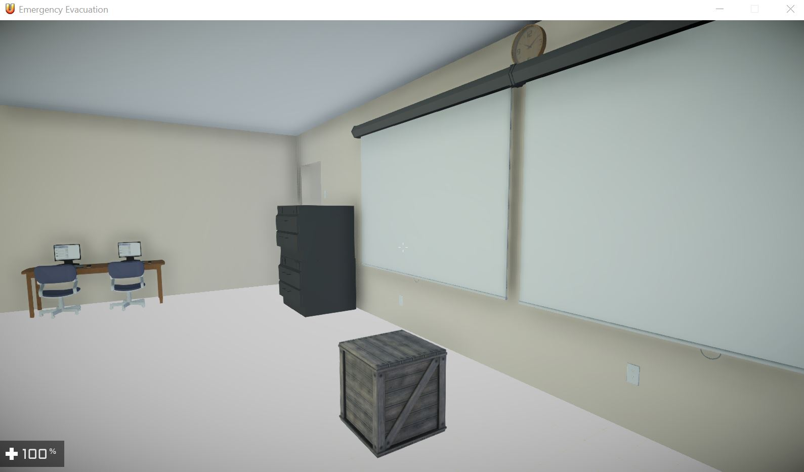
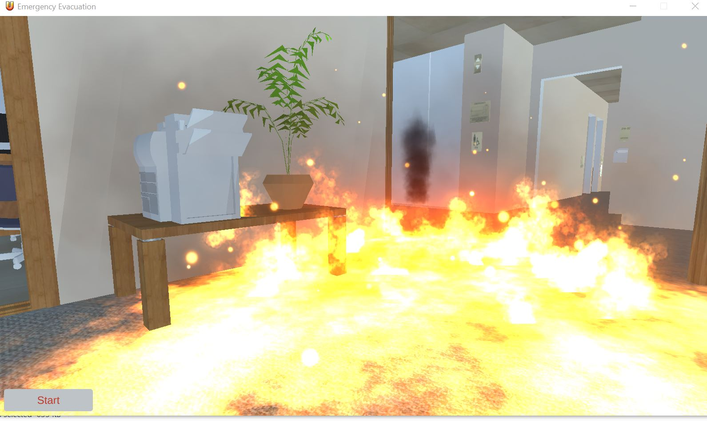
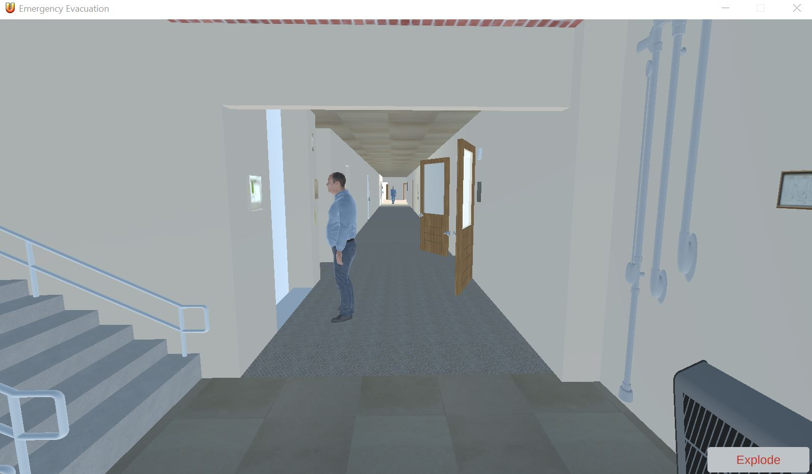
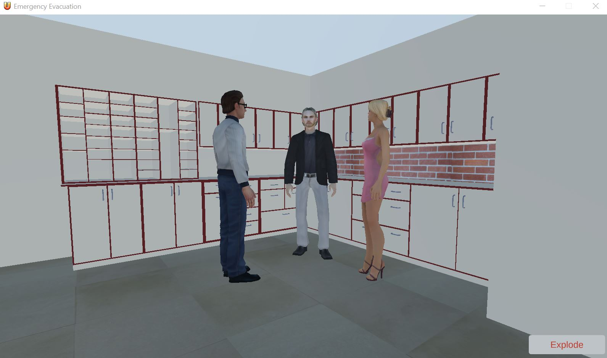
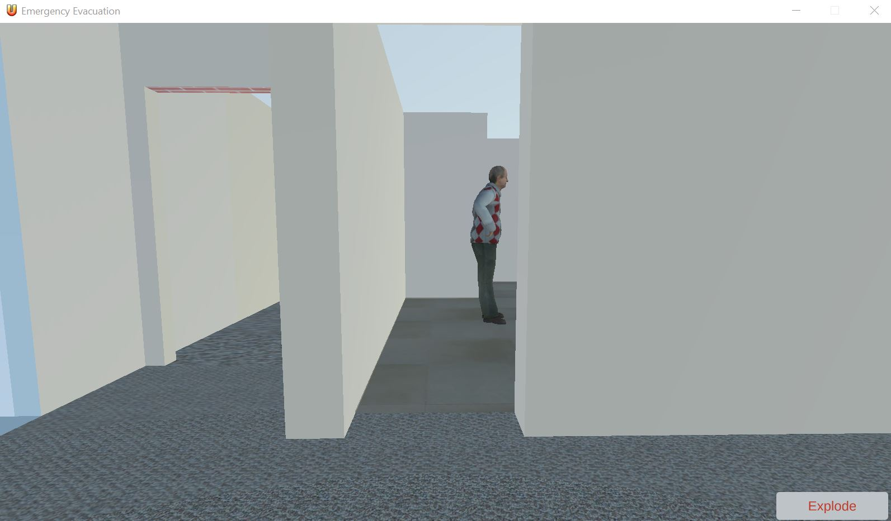

The VR XML Data Model Visualization Project is a python based virtual reality project that generates 3D treegraph representation of XML data in an immersive and interactive virtual environment.Data models are often represented as spreadsheet tables or eXtensible Markup Language (XML) files. The relationships are sometimes visualized using Unified Modeling Language (UML) and related software architecture tools. However, they are often flattened and limited views. An interactive 3D representation provides a new and different way of looking at and manipulating models which can foster interest in data architecture and data modeling. The VR XML Data Model Visualization Project was created using the Vizard platform along with several graphical modeling tools including SketchUp and 3DS Max.
The centerpiece of the virtual environment is the data model itself which is a 3D tree-graph representation of the XML data. The model is generated in a three-step process. First the data model is read in form an XML file. Then recursive methods are used to walk the data to generate the 3D tree graph. Trigonometry was used to create placement for the nodes in 3D. Node size and colors are used to express different data types and attributes contained in an XML data file.
Project 2: Wildlands: Obstacle Avoidance Game (Project Report) Presentation Students: Anthony Herron and Mahfoudh Batarfi
The objective of this project is to create a game that is easy to pick up and play. The game is supposed to be played mostly for exploring the world rather than completing specific objectives. The goal of this project is to navigate through the wildlands while collecting gems. While navigating through the wildlands, there are multiple enemies trying to kill you.
The first level's purpose is getting used to the game, while the second level is more challenging. The first level's enemies do very low damage and the health pickups also do very little. There is also more time so you can explore the game. The second level enemies do much more damage and health items give more health. The goal of the game changes to try collect a certain amount of gems within a shorter time limit. The environment is filled with many bridges, roads, trees, and ponds. There will not be any gems on or in any tree or pond as they are mostly just for show. Roads and bridges are a different case and will be filled with enemies, gems, and health. There are also pedestals that hold up gems, these will usually be surrounded by enemies.
The aim of this project is to create a virtual active shooter response module for CS building using unity 3D. In this application, the user will have an option to enter the application as a policeman or as a regular (student, staff, visitor or worker) person in the building. When the user selected policeman, then the user will take a police responsibility. In this mode, the user will have an opportunity to take training by video. After the training video, the user can practice the protocols that the cops follow during active shooter elimination. practicing the target elimination in the real world is very hard because the creation of the scenario is very hard
Active shooter situations are unpredictable and evolve quickly. Active shooter situations are often over within 10 to 15 minutes, before law enforcement arrives on the scene. Individuals must be prepared both mentally and physically to deal with an active shooter situation.
Active shooters use firearms and there is no pattern or method to their selection of victims.The goal of the project is to
•What to do if you find yourself in an active shooting event.
•What to expect after an active shooting takes place.
•What to Remember during an active shooting .
The Project is implemneted in Unity 3D and is based on RUN, HIDE, & FIGHT mode for emergency response.





Previous Year Projects for Virtual Reality Class at BSU


{kind=link}
{kind=link}
{kind=link}
{kind=link}
{kind=link}
{kind=link}
{kind=link}
{kind=link}
{kind=link}
{kind=link}
{kind=link}
{kind=link}